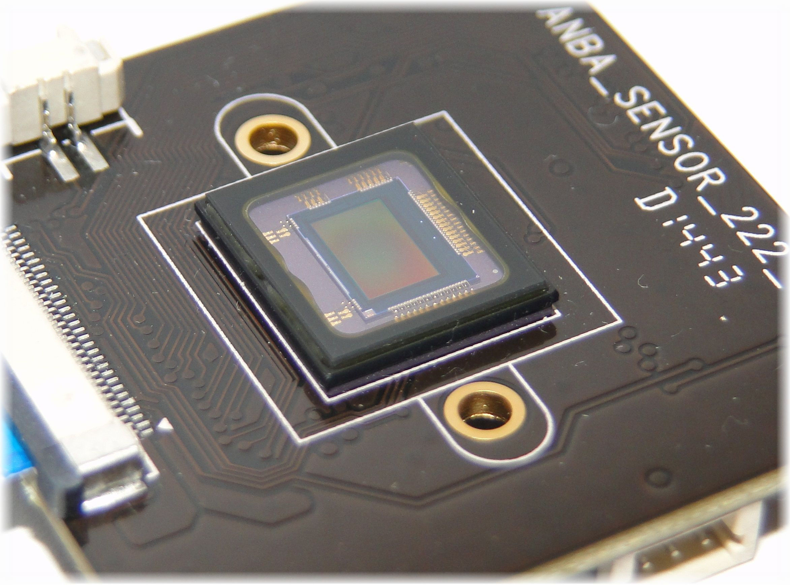

Wat zijn kleurmodelen precies?
Kleurmodelen zijn systemen die gebruikt worden om op een digitale manier te representeren en manipuleren.
De kleurmodelen zijn super belangrijk voor het weergeven, opslaan, bewerken en uitwisselen van kleurinformatie in digitale afbeeldingen en grafische toepassingen.
Verschillende kleurmodellen hebben verschillende sterke punten en worden gebruikt voor verschillende doeleinden, zoals grafisch ontwerp, fotografie, drukwerk,
videocompressie, enzovoort. Je moet de kleurmodelen dan ook goed begrijpen wil je werken met digitale afbeeeldingen en kleurbeheer.
RGB
RGB is de afkorting voor de primaire kleuren: rood, groen en blauw.
Het is een kleurmodel dat wordt gebruikt om kleuren op digitale apparaten, zoals computerschermen en digitale camera's, te representeren en weer te geven.
De basis van dit model is kleurloos en de kleuren worden gevormd wanneer er
licht aan toe wordt gevoegd (het mengen van de primaire kleuren). Om die reden is een beeldscherm dat uitstaat zwart.
Het is het meest gangbare kleurmodel voor de weergave van kleur op digitale schermen.
CDD
De camera van je beeldscherm, bijvoorbeeld van je telefoon bestaan uit lenzen. Achter deze lenzen zitten beeldsensor, ook wel CDD genoemd. Deze sensor bestaat uit miljoenen lichtgevoelige fotocellen. Als jij een foto maakt met je telefoon wordt er een momentopname gemaakt van al het invallende licht. De sensoren zetten dit om in een elektrisch signaal.
Pixels
Als je de foto die je hebt gemaak ver inzoomt zie je dat de foto bestaat uit pixels,
dat zijn vierkante blokjes met een bepaalde kleur. Een pixel is de kleinste eenheid van een digitale afbeelding of scherm.
Pixels vormen de bouwstenen van digitale afbeeldingen.
Iedere pixel bestaat uit 3 lampjes,
doordat je de lampjes harder of zwakker kunt laten branden, kunnen er verschillende
kleuren weergeven worden op het beeldscherm. Door de kleuren van het kleurmodel
te mengen ontstaan er nieuwe kleuren.
Afdrukken op wit papier
Omdat een RGB is afgesteld op een zwarte achtergrond, gaat het fout als je iets wilt afdrukken op een wit papier. Hiervoor is een speciaal ander kleur model, hier worden kleuren toegevoegd aan een witte achtergrond.